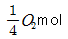
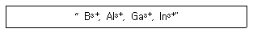
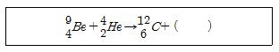
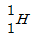
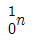
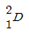
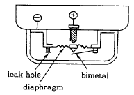
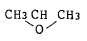

위험물산업기사 (2002-09-08 기출문제)
1과목: 일반화학
1. 다음중 어느 경우에 순수한 물의 끓는점 오름 현상이 나타나는가?
- 설탕을 넣었을 때
- 세게 가열할 때
- 구리가루를 넣었을 때
- 에테르(ether)를 넣었을 때
(정답률: 68%)

2. 다음 중 산성염 만으로 묶인 것은?
- NaHSO4, Ca(HCO3)2
- Ca(OH)Cl, Cu(OH)Cl
- NaHSO4, Cu(OH)Cl
- Ca(OH)Cl, Ca(HCO3)2
(정답률: 65%)
3. 이산화납과 과산화수소는 PbO2 + H2O2 → PbO + O2 + H2O 과 같이 반응하여 산소를 발생한다. 이 반응에 대한 설명이 옳은 것은?
- 산화, 환원반응이 아니다.
- PbO2나 H2O2는 산화제로 작용한다.
- H2O2나 PbO2는 환원제로 작용한다.
- PbO2는 산화제로 작용하고 H2O2는 환원제로 작용한다.
(정답률: 50%)
4. 프리이델 - 크라프츠 반응에서 사용하는 촉매는?
- HNO3 + H2SO4
- SO3
- Fe
- AlCl3
(정답률: 60%)
5. 요소 6g을 물에 녹여 1000L로 만든 용액의 27℃에서의 삼투압을 약 얼마인가? (단, 요소의 분자량은 60이고, 기체상수는 0.0825atmㆍLㆍmol-1ㆍK-1이다.)
- 1.26 × 10-1 atm
- 1.26 × 10-2 atm
- 2.46 × 10-3 atm
- 2.56 × 10-4 atm
(정답률: 69%)
6. 수소 분자 1mol중에 양성자수는 다음 어느 것과 같은가?

중 양성자수- NaCl 1 mol 중 ion 의 총수
- 수소 1/2mol 중의 원자수
- CO2 1 mol 중의 원자수
(정답률: 61%)
7. 다음 중에서 산성이 가장 강한 것은?
- [H+] = 2× 10-3 몰/L
- pH = 3
- [OH-] = 2×10-3 몰/L
- 0.1M-HF(이온화도 0.0001)
(정답률: 55%)
8. O 와 CO2의 성질에 대한 설명이 잘못된 것은?
- CO2 는 공기 보다 무겁고 CO 는 가볍다.
- CO2 와 CO는 석회수와 작용하여 탄산칼슘이 된다.
- CO2 는 타지 않으나 CO 는 타서 파란색 불꽃을 낸다.
- CO2 는 빵을 부풀게 하는데 쓰며 CO는 금속 산화물을 환원하는데 쓴다.
(정답률: 44%)
9. 산소족 원소가 아닌 것은?
- S
- Se
- Te
- Bi
(정답률: 73%)
10. 산화에 해당되지 않는 것은?
- 산화수의 증가할 때
- 물질이 산소와 화합할 때
- 수소화합물이 수소를 잃을때
- 원자나 원자단 또는 이온이 전자를 얻을 때
(정답률: 58%)
11. 벤젠을 공기 중에서 태우면 매연이 발생하는 이유는?
- 벤젠이 기체연료이기 때문에
- 벤젠에 어느정도 수분을 포함하고 있기 때문에
- 벤젠의 조성이 수소에 비해 탄소를 많이 포함하고 있기 때문에
- 벤젠이 공기중 수증기와 반응하여 니트로벤젠과 살리 실산이 합성되기 때문에
(정답률: 59%)
12. 다음중 에스테르화 반응에 해당되는 것은?
- 니트로벤젠 → 아닐린
- 아세트산 + 진한황산 → 초산에틸+물
- 단백질 → 아미노산
- 페놀 + 포름알데히드 → 베이크라이트
(정답률: 46%)
13. 용액 1L중에 황산이 49g녹아 있다면 이 때의 노르말 농도(N)는 얼마인가?
- 1N
- 2N
- 3N
- 4N
(정답률: 47%)
14. 0.2N NaOH 용액 51mL 에 0.6N NaOH 용액 얼마를 가하면 0.3N NaOH 용액이 되겠는가?
- 85mL
- 34mL
- 25.5mL
- 17mL
(정답률: 44%)
15. 반응 "A2(g) + 2B2(g) + 2AB2(g) + 열"에서 평형을 왼쪽으로 이동시킬 수 있는 조건은?
- 압력감소, 온도감소
- 압력증가, 온도증가
- 압력감소, 온도증가
- 압력증가, 온도감소
(정답률: 65%)
16. 다음 이온의 반경을 크기 순으로 올바르게 나열한 것은?

- B3+＜Al3+＜Ga3+＜In3+
- B3+＞Al3+＞Ga3+＞In3+
- Ga3+＜In3+＜B3+＜Al3+
- Ga3+＞In3+＞B3+＞Al3+
(정답률: 40%)
17. 무극성 분자인 액체 A와 B가 있다. 동일한 온도에서 액체 A가 B에 비해 증기압이 높다고 할 때 A와 B의 비교 설명이 옳은 것은?
- 액체 A가 B에 비해 분자간 인력이 크다.
- 액체 A가 B에 비해 분자량이 크다.
- 액체 A가 B에 비해 몰 증발열이 크다.
- 액체 A가 B에 비해 휘발성이 크다.
(정답률: 45%)
18. 표준 상태에서 어떤 기체 XO2의 밀도는 산소 기체의 2배 이다. 산소의 원자량이 16이라고 할 때, 기체 XO2의 성분 원소인 X의 원자량은?
- 16
- 24
- 32
- 48
(정답률: 61%)
19. 다음의 핵 화학반응에서 ( )속에 채워져야 하는 것은?



- e⁺

(정답률: 63%)
20. 다음 물질들에서 이웃하는 두 탄소간의 결합 길이가 가장 짧은 것은?
- CH≡ CH
- CH2=CH2
- CH3-CH3
- C6H6
(정답률: 69%)
2과목: 화재예방과 소화방법
21. 다음 중 소화약제로 쓸 수 없는 것은?
- BaCI2
- KCI
- KHCO3
- CaC2
(정답률: 64%)
22. 다음 할로겐화합물 소화제로 사용되는 액체의 성질로서 틀린 것은?
- 비점이 낮을 것
- 증기가 되기 쉬울 것
- 공기보다 무겁고 불연성일 것
- 부착성이 있을 것
(정답률: 32%)
23. 탄산수소나트륨과 황산알루미늄의 수용액이 화학반응 하여 생성되지 않는 것은?
- 황산나트륨
- 탄산수소 알루미늄
- 수산화알루미늄
- 이산화탄소
(정답률: 47%)
24. 포 (거품) 방출구의 종류는 포의 팽창 비율로 나눈다. 고발포용 고정포 방출구의 팽창비는?
- 10 이상∼20 미만
- 20 이상∼40 미만
- 80 이상∼1,000 미만
- 1,000 이상
(정답률: 49%)
25. 위험물의 적응 소화방법으로 맞지 않는 것은?
- 산화성고체 : 질식소화
- 가연성고체 : 냉각소화
- 인화성액체 : 질식소화
- 자기반응성물질 : 냉각소화
(정답률: 44%)
26. 금수성 위험물질에 적응성 있는 소화설비는?
- 할로겐화합물소화기
- 인산염류소화기
- 이산화탄소소화기
- 탄산수소염류소화기
(정답률: 69%)
27. 대량의 제4류 위험물 화재에 물로서 소화하는 것은 적당하지 않은 이유 중 가장 옳은 것은?
- 가연성 가스를 발생하다.
- 연소면을 확대한다.
- 인화점이 강하한다.
- 물이 열분해한다.
(정답률: 80%)
28. 다음 중 물과 접촉시 화재위험이 가장 큰 것은 ?
- Na2O2
- CaO
- P4
- Na
(정답률: 55%)
29. 금수성 물질인 금속나트륨.금속칼륨 의 취급시 잘못으로 화재가 발생 하였을때 어떻게 소화해야 하는가?
- 마른 모래를 덮어 소화시킨다.
- 물을 사용하여 소화한다.
- CCl4 소화기를 사용한다.
- CO2 소화기를 사용한다.
(정답률: 78%)
30. 소방법상 물분무등 소화설비에 포함되지 않는 것은?
- 포소화설비
- 분말소화설비
- 스프링클러설비
- 이산화탄소소화설비
(정답률: 66%)
31. 스프링클러 설비에서 압력수조를 이용한 가압 송수장치의 설치 기준으로 틀린 것은?
- 수조에는 수압계, 오버플로우관을 설치할 것
- 압력 저하방지를 위한 자동식 에어콤프레샤를 설치 할 것
- 압력수조에는 배수관, 수위계, 급수관을 설치할 것
- 수조에는 급기관, 맨홀, 압력계, 안전장치를 설치할 것
(정답률: 32%)
32. 강화액 소화기는 방식에 따라 축압식, 가압식, 반응식이 있다. 축압식의 경우 가압원은?
- 탄산가스
- 물
- 공기
- 질소
(정답률: 25%)
33. 자동화재탐지설비의 상용전원 설치 기준으로 틀린 것은?
- 개폐기에는"자동화재탐지설비용" 이라고 표지 할 것
- 축전지 또는 교류저압의 옥내 간선으로 할 것
- 설비 감시상태는 60분간 지속후 10분이상 경보 할 것
- 감지기작동은 연동하여 작동할수 있는 것으로 할 것
(정답률: 31%)
34. 비상방송설비의 설치 기준 중 확성기의 음성입력은 몇 와트 이상인가?
- 1와트
- 2와트
- 3와트
- 4와트
(정답률: 46%)
35. 다음 그림과 같은 구조를 갖는 감지기의 명칭은?

- 차동식 감지기
- 보상식 감지기
- 정온식 감지기
- 연기 감지기
(정답률: 35%)
36. 피난설비가 아닌 것은?
- 피난사다리
- 인공소생기
- 공기안전매트
- 누전경보기
(정답률: 54%)
37. 카바이트의 소화방법으로 옳지 않은 것은?
- 아세틸렌 가스가 발생하여 연소되고 있는 경우는 주위 가연물을 제거한다.
- 다량의 마른모래나 분말로 소화한다.
- 포소화약제를 사용한다.
- 아세틸렌은 대류에 의한 2차 폭발이 없도록 충분히 고려하여 소화한다.
(정답률: 57%)
38. 피난 유도등에 대한 설명 중 틀린 것은?
- 피난구 바닥으로부터 높이 1.5m 이상의 곳에 설치
- 조명도는 피난구로부터 30m의 거리에서 문자 및 색채를 쉽게 식별
- 직통계단의 계단실 및 그 부속실의 출입구에 설치
- 보행거리가 50m 이하가 되는 곳과 구부러진 모퉁이에 설치
(정답률: 55%)
39. 고온체의 색깔과 온도의 연결이 잘못된 것은?
- 적색 = 850℃
- 휘적색 = 1000℃
- 황적색 = 1100℃
- 백적색 = 1300℃
(정답률: 68%)
40. 옥내소화전이 층마다 8개씩 설치된 건축물의 옥상에 설치하여야 할 수원의 양은?
- 2.6m3 × 8 × 1/3 이상
- 2.6m3 × 5 × 1/3 이상
- 2.6m3 × 5 × 1/2 이상
- 2.6m3 × 8 × 1/2 이상
(정답률: 52%)
3과목: 위험물의 성질과 취급
41. 다음 제조소 가운데 위치 구조 및 설비의 기술기준에 공지를 보유할 것이 규정되어 있는 것은?
- 옥내 탱크저장소
- 석유판매 취급소
- 지하 탱크저장소
- 주유 취급소
(정답률: 36%)
42. 에테르의 성질을 설명한 것중 틀리는 것은?
- 알코올에는 녹지 않으나 물에는 잘 녹는다.
- 제4류 위험물중 가장 인화하기 쉬운 부류에 속한다.
- 비전도성이며 정전기를 발생하기 쉽다.
- 소화제로는 탄산가스가 적당하다.
(정답률: 53%)
43. 다음 제4류 위험물중 제 2석유류의 지정품목은?
- 등유
- 중유
- 크레소오트유
- 에틸렌 글리콜
(정답률: 72%)
44. 개미산 에틸 에스테르의 성질 중 틀린 것은?
- 증기는 다소 마취성이 있으나 독성은 없다.
- 유기 용매와는 자유로이 혼합되며 특히 물과는 혼합되지 않는다.
- 휘발하기 쉽고 인화성인 액체이다.
- 니트로 셀룰로오스용 용제로 사용된다.
(정답률: 51%)
45. 질산에틸(C2H5NO3)의 성상에 관한 설명중 틀린 것은?
- 향기를 갖고 단맛이 있는 무색의 액체이다.
- 휘발성물질로 그 증기 밀도는 공기보다 가볍다.
- 물에는 녹지 않으나 알코올에 녹으며 용제로 사용된다.
- 상온에서 가연성 증기를 발생하여 인화의 위험성이 있다.
(정답률: 49%)
46. 니트로 셀룰로오스에 대하여 옳은 것은?
- 니트로글리세린이라 하며 셀룰로오스와 글리세린의 에스테르이다.
- 셀룰로이드의 염산화합물이다.
- 제5류의 질산에스테르에 해당한다.
- 셀룰로오스의 황산에스테르이다.
(정답률: 60%)
47. 제5류 위험물에 해당되지 않는 것은?
- 유기과산화물
- 질산아밀류
- 셀룰로이드류
- 아조화합물
(정답률: 49%)
48. 발연황산에 대한 성질로 가장 적당한 것은?
- 발연황산에 S02를 흡수시킨 것이며 갈색의 고체이다.
- 발연황산에 SO3를 흡수시킨 것이며 갈색의 고체이다.
- 발연황산에 SO3를 흡수시킨 것이며 무색의 액체이다.
- 발연황산을 높은 온도로 가열하면 발생기 수소로 센 산화작용을 한다.
(정답률: 37%)
49. MgO2와 염산이 반응하여 생성된 물질로서 석유와 벤젠에 불용성이고, 피부와 접촉시 수종을 생기게 하는 위험물질은?
- 과산화나트륨
- 과산화수소
- 과산화벤조일
- 과산화칼륨
(정답률: 54%)
50. 어떤 물질에 과망간산칼륨을 묻혀 알콜 램프의 심지에 접하면 점화한다. 이 물질은 어느 것인가?
- 진한황산
- 알콜
- 과산화나트륨
- 금속나트륨
(정답률: 45%)
51. 다음 중 옥외에 저장할 수 없는 위험물은?
- 유황
- 아세톤
- 농질산
- 등유
(정답률: 56%)
52. 에테르를 저장,취급할 때 주의 사항으로 틀 린 것은?
- 장시간 공기와 접속하고 있으면 과산화물이 생성되어 폭발 위험이 있다.
- 연소범위는 가솔린보다 좁지만 인화점과 착화온도가 낮으므로 주의를 요한다.
- 건조한 에테르는 비전도성이므로 정전기 발생에 주의를 요한다.
- 소화재로서 CO2가 가장 적당하다.
(정답률: 51%)
53. 유기 과산화물의 저장시 주의사항 중 잘못된 것은?
- 환기가 잘되는 냉암소에 보관한다.
- 산화제와 같이 저장한다.
- 환원제와 격리하여 저장한다.
- 건조하고 온도가 높은 곳은 피해야 한다.
(정답률: 70%)
54. 저장소용 건축물의 외벽이 내화 구조로 되었을 경우 소요단위 1 단위에 해당되는 면적은?
- 50m2
- 750m2
- 1000m2
- 1500m2
(정답률: 61%)
55. 아세트 알데히드의 저장시 주의점이 아닌 것은?
- 구리나 마그네슘 합금 용기에 저장해야 한다.
- 화기를 가까이 하지 않는다.
- 용기의 파손에 유의한다.
- 찬곳에 저장한다.
(정답률: 85%)
56. 다음 위험물을 취급하는 장치가 구리나 마그네슘으로 되어 있을 때 중합 반응을 일으키기 쉬운 것은?
- CS2
- (CH3)2CHOH

- CH3COCH3
(정답률: 53%)
57. 메틸 알코올을 취급할 때의 위험성에서 틀리는 사항은?
- 겨울에는 폭발성 혼합 기체가 생기지 않는다.
- 연소 범위는 에틸알콜 보다 좁다.
- 독성이 있다.
- 증기는 공기 보다 약간 무겁다.
(정답률: 44%)
58. 물과 작용해서 가연성 기체를 발생하는 위험물은 어느 것인가?
- 생석회
- 황
- 적린
- 탄화칼슘
(정답률: 76%)
59. 화기의 위험으로 상부를 물로 덮어서 저장하는 것은?
- 무수아세트산
- 포르말린
- 사염화탄소
- 이황화탄소
(정답률: 76%)
60. 다음과 같은 위험물을 취급할 때 반응생성물 중 인화의 위험이 가장 적은 것은?
- CaO + H2O → Ca(OH)2
- CaC2 + 2H2O → Ca(OH)2 + C2H2
- 2Na + 2H2O → 2NaOH + H2
- Ca3P2 + 6H2O → 2PH3 + 3Ca(OH)2
(정답률: 49%)